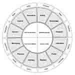

{
"UUID": "84798cff-a773-4d40-9826-5f6f890d7e5d",
"Title": "Amplify",
"ShortDescription": "A tool for municipal civic engagement",
"Year": 2021,
"FeaturedWork": "FALSE",
"URL": "amplify",
"Modality": [
"Digital"
],
"Medium": [
"Product design",
"UX design"
],
"Tools": [],
"Object": [
"Case study",
"Wireframes"
],
"Collaborators": [
"Hershel Nashman",
"Madalayne Rockarts",
"Nathan von Wistinghausen",
"Sunny Zhang"
],
"Keywords": [
"Culture",
"Public service"
]
}Amplify is a digital civic engagement platform that empowers citizens to get involved in city building by providing a space to collaborate, share ideas, and give feedback to their municipal government. It incorporates the Ethical Smart Cities Framework and utilizes creative methods of data collection and visualization to help foster efficient and meaningful engagement.
We spent some time in the preliminary phases of this project gaining an understanding of the space within which we were operating. This involved talking to individuals who worked or had worked on existing digital civic engagement solutions, small business owners who had experience working government contracts (and the grant writing process it entailed), and local politicians. Through the variety of individuals we talked to, we established five different personas. (Fig. 1, Fig. 2, Fig. 3, Fig. 4, Fig. 5, Fig. 6).
| * | Title | Size (bytes) | View |
|---|---|---|---|
 | Personas overview | 686,140 | Load image |
| Deer persona | 139,034 | Load image | |
| Eagle persona | 162,168 | Load image | |
| Hummingbird persona | 169,543 | Load image | |
| Sloth persona | 154,156 | Load image | |
| Turtle persona | 163,104 | Load image |
Our first set of prototypes consisted of a home page featuring projects, events, and community ideas, a list view for proposed projects within a municipality, a project page which contained a timeline and feedback mechanisms, as well as a dashboard for employees of a given municipal government to view the feedback shared by community members.
This project, and the onboarding flow in particular, was guided by the Ethical Smart Cities (ESC) framework and toolkit. The ESC-Toolkit is meant to help develop a shared understanding of what an ethical smart city is, and how to achieve it through engaging citizens and understanding their values. Throughout our onboarding questions there are questions from the ESC-Toolkit that we ask with the intention of helping citizens learn more about their community’s values and providing governments with a greater understanding of their community’s needs (App. A).
Amplify also featured a map function (App. B), where citizens could view projects by location, as well as a sidebar to toggle to switch to a list view of the projects. The sidebar view also features search and filter functionality, and can be toggled between a preview of a project, as well as a list view for all projects on the map. You can view the map with different sidebar options here or click/copy the link below into your browser for an interactive prototype.